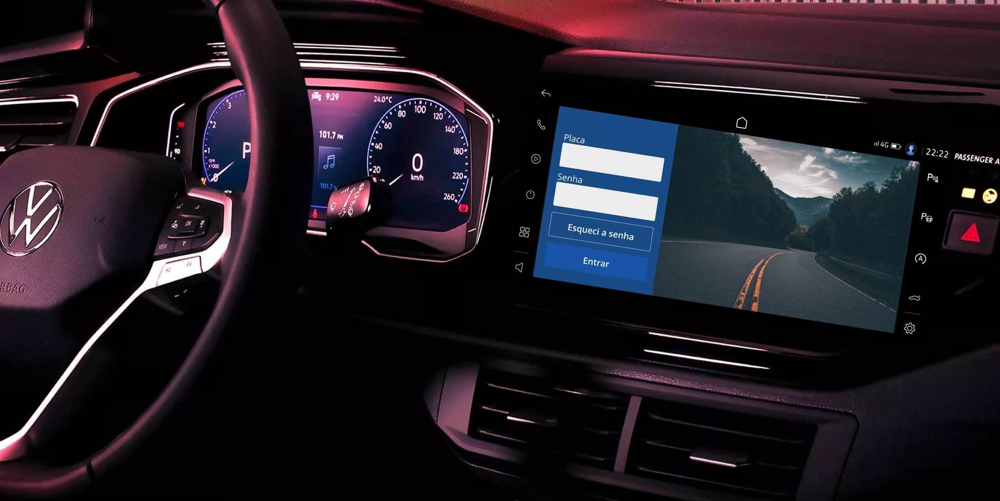
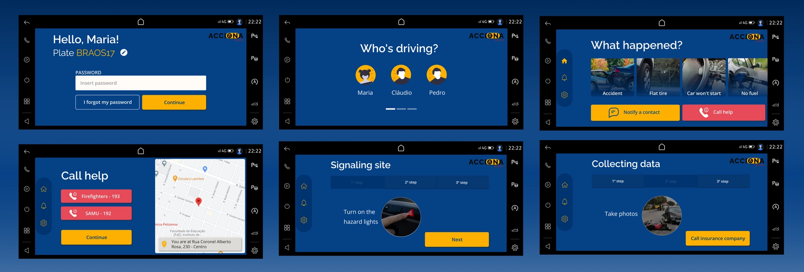

Acciona Seguros · 2020
Ajuda clara quando cada decisão importaClear help when every decision matters
Um estudo de UX para reduzir a ansiedade e orientar motoristas em acidentes e emergências, pensado para o VW Play.
A UX study designed to reduce anxiety and guide drivers through accidents and emergencies, created for VW Play.

01 · DesafioChallenge
Como ajudar um motorista envolvido em um acidente?How might we help a driver involved in an accident?
Em setembro de 2020, durante o curso UX Unicórnio, formamos um time de seis pessoas para aprender e aplicar os métodos de cada etapa do processo de design. Nosso desafio era entender como ajudar, por meio de um aplicativo no VW Play, um motorista envolvido em um acidente.
In September 2020, while taking the UX Unicórnio course, we formed a six-person team to learn and apply the methods involved in each stage of the design process. Our challenge was to understand how an app on VW Play could help a driver involved in a car accident.
Acidentes são imprevisíveis e costumam gerar algum nível de estresse, de um pneu furado a uma colisão grave. Nesse momento, a pessoa precisa verificar se todos estão bem, sinalizar a área, acionar as autoridades e entrar em contato com a seguradora — tudo isso enquanto lida com ansiedade, tensão e dúvidas sobre o que fazer.
Accidents are unpredictable and usually cause some level of stress, from a flat tire to a serious collision. In that moment, a person needs to check whether everyone is safe, signal the area, contact the authorities, and speak to their insurer—all while dealing with anxiety, tension, and uncertainty about what to do.
Nosso objetivo era apoiar usuários do VW Play em acidentes ou problemas automotivos, tornando o pedido de ajuda mais rápido e oferecendo mais segurança para lidar com a situação.
Our goal was to assist VW Play users during an accident or automotive issue, making it faster to request help and offering greater confidence when handling the situation.
02 · PesquisaResearch
Dados para entender o problema realData to understand the real problem
Realizamos duas pesquisas quantitativas. A primeira, com 130 respostas, ajudou a construir a persona e mostrou que a maioria dos acidentes era composta por colisões sem vítimas. Como os dados ainda não eram suficientes para mapear a jornada completa, fizemos uma segunda pesquisa, agora focada nesse cenário, com 85 respostas.
We conducted two quantitative surveys. The first, with 130 responses, helped us build the persona and showed that most accidents were non-injury collisions. Because the data was not enough to map the complete journey, we ran a second survey focused on this scenario, with 85 responses.
Antes do segundo questionário, criamos uma matriz de Certezas, Suposições e Dúvidas. Como surgiram muitas perguntas, usamos também uma matriz de Impacto versus Conhecimento para priorizar as dúvidas mais relevantes para o produto e sobre as quais sabíamos menos.
Before preparing the second questionnaire, we created a Certainties, Assumptions, and Doubts matrix. Because it generated many questions, we also used an Impact versus Knowledge matrix to prioritize the issues with the greatest product impact and the least existing knowledge.
Nas entrevistas qualitativas, descobrimos que muitas pessoas ficam paralisadas depois de um acidente. Algumas não conseguem lembrar o telefone de pessoas próximas, sentem medo de sair do carro ou não sabem informar exatamente onde estão. Esses relatos deixaram claro que a solução precisava orientar, reduzir decisões e facilitar o contato com quem pudesse ajudar.
In qualitative interviews, we learned that many people feel paralyzed after an accident. Some cannot remember the phone numbers of close contacts, feel afraid to leave the car, or cannot identify their exact location. These stories made it clear that the solution needed to guide users, reduce decisions, and simplify contact with people who could help.
03 · PriorizaçãoPrioritization
Das oportunidades às funcionalidadesTurning opportunities into features
Reescrevemos as oportunidades no formato “Como poderíamos” e usamos uma matriz de Impacto versus Esforço para decidir o que entraria no produto e o que ficaria como possibilidade futura.
We reframed the opportunities as “How might we” questions and used an Impact versus Effort matrix to decide what should be included in the product and what should remain a future opportunity.
Priorizamos instruções para sinalizar corretamente o local do acidente, o envio automático de avisos para contatos pessoais e um caminho simples para falar com a seguradora e solicitar serviços.
We prioritized instructions for signaling the accident site, automatic notifications to personal contacts, and a simple path to contact the insurer and request services.
04 · Testes de usabilidadeUsability testing
Duas rodadas de teste transformaram o fluxoTwo testing rounds transformed the flow
Como o time trabalhava remotamente durante a pandemia, criamos o primeiro protótipo no Figma e conduzimos testes com quatro pessoas por videochamada. Pedimos que imaginassem uma colisão sem vítimas e solicitassem um guincho e o contato com a seguradora.
Because the team was working remotely during the pandemic, we built the first prototype in Figma and tested it with four people over video calls. We asked them to imagine a non-injury collision, request a tow truck, and contact their insurer.
Os testes mostraram problemas importantes: o botão principal passava despercebido; as instruções pareciam pouco clicáveis; algumas ilustrações eram confundidas com botões; e termos como “franquia” não eram compreendidos. Também percebemos que solicitar um guincho e acionar a franquia eram serviços diferentes e não deveriam aparecer juntos naquele ponto da jornada.
The tests revealed important issues: the main button was overlooked; instructions did not look clickable; some illustrations were mistaken for buttons; and terms such as “deductible” were not understood. We also realized that requesting a tow truck and activating the deductible were separate services and should not appear together at that point in the journey.
Na segunda rodada, testamos a versão de alta fidelidade com cinco pessoas. Além do guincho e do seguro, incluímos tarefas como ligar para o SAMU e avisar um contato de emergência. Ainda encontramos dúvidas sobre rótulos, campos editáveis e a sequência das instruções. Cada dificuldade observada orientou a versão final.
In the second round, we tested the high-fidelity version with five people. In addition to the tow truck and insurance tasks, we included calling SAMU and notifying an emergency contact. We still found uncertainty around labels, editable fields, and the sequence of instructions. Each observed difficulty informed the final version.
05 · SoluçãoSolution
Orientação passo a passo em um momento de estresseStep-by-step guidance during a stressful moment
A solução final ajuda a pessoa a sinalizar o acidente, reunir as informações necessárias, notificar contatos pessoais, fazer chamadas de emergência e se conectar com a seguradora. O fluxo distribui as decisões em etapas claras para não sobrecarregar quem já está lidando com uma situação difícil.
The final solution helps the person signal the accident, collect the necessary information, notify personal contacts, make emergency calls, and connect with the insurer. The flow distributes decisions across clear steps so it does not overload someone already dealing with a difficult situation.
Escolhemos o azul para transmitir calma e segurança, enquanto o amarelo sinaliza alertas e chama atenção para os elementos mais importantes. As cores passaram por testes de contraste e acessibilidade. Para a tipografia, usamos Raleway nos títulos e Open Sans nos textos corridos, priorizando leitura e clareza.
We chose blue to convey calm and security, while yellow signals alerts and draws attention to the most important elements. The colors passed contrast and accessibility tests. For typography, we used Raleway for headings and Open Sans for body text, prioritizing readability and clarity.
Este case foi criado antes de a Volkswagen publicar o Style Guide do VW Play, em dezembro de 2020. As opções “Pneu furado”, “Carro não liga” e “Sem combustível” aparecem como oportunidades futuras e ainda exigiriam pesquisa e mapeamento próprios.
This case study was created before Volkswagen released the VW Play Style Guide in December 2020. The “Flat tire,” “Car won't start,” and “No fuel” options remain future opportunities and would each require their own research and journey mapping.
